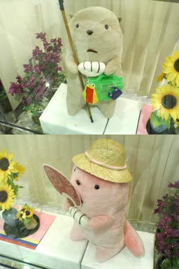

|
■2004/08/11/(Wed)23:33
ひさしぶりに
|

福岡出張に行ってました。
お盆時期ゆえに、航空運賃が高くってスカイマークエアラインズを利用。チェックインは大混雑だし、帰省やレジャーに浮き足立ってる人に混じって仕事モードとゆーのがなんとも「キー！うらやまちい！」だったのでシグナスとゆースーパーシートに乗ってみました（自腹（泣））、ZIMAが飲み放題。
ちゃーんと瓶ごと出てきました。
割ったら殺傷能力たっぷしだけど大丈夫なのかちら？
で、ガラスのコップもついてきました。
JAL、ANAはプラスチックじゃなかったっけなぁ…？
揺れてテーブルの上をツツーと移動。大丈夫なのかちら？
ZIMA２本（おつまみ付）飲んで、茶菓を貰い、お茶を貰い、ペットボトル２本貰ってきました。
だいぶ元とった？
写真は福岡の銀行のもえきゃら。
|
| |